Lenchong Metal Works

3 Parts of Calendar on Desktop
-Main Calendar
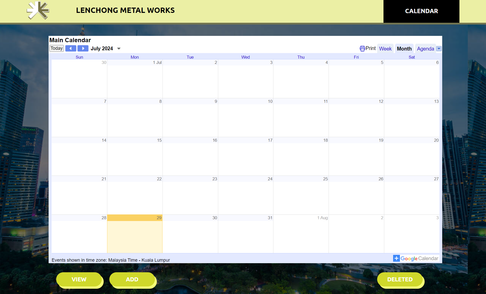-Delivery and Shipping Calendar
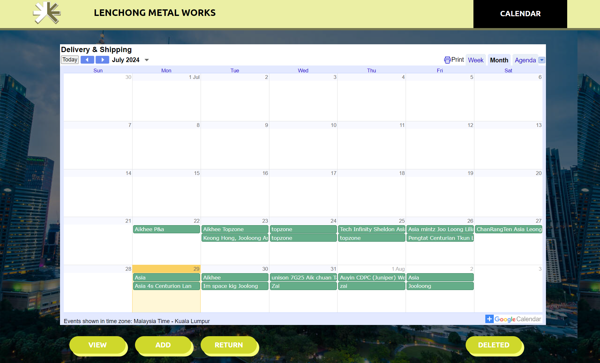-Off Day Calendar
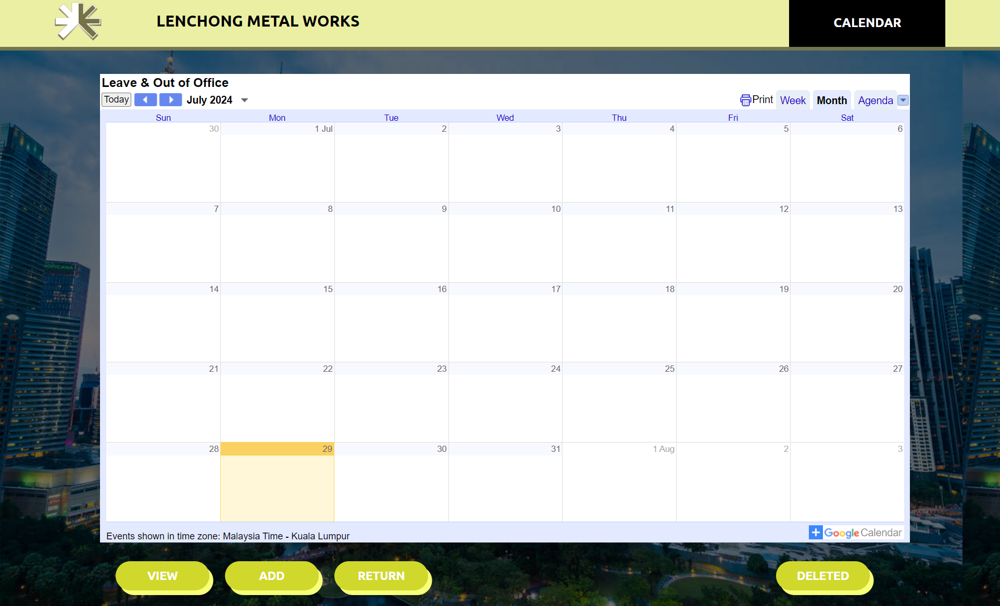You can change each calendar by using the dropdown menu
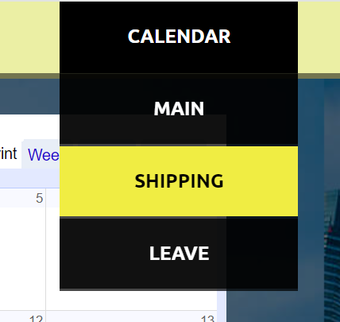There are 3 main button for this calendar
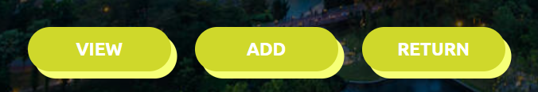"VIEW" button will take you to the page of google calendar, allows you to manage your calendar
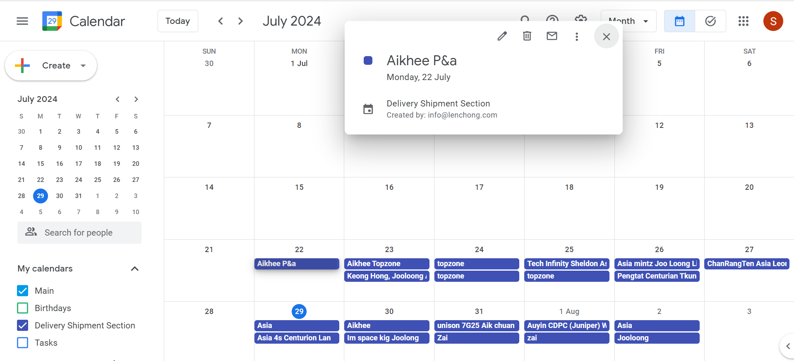"ADD" button will take you to the add event/task page, allows you to add event on your calendar
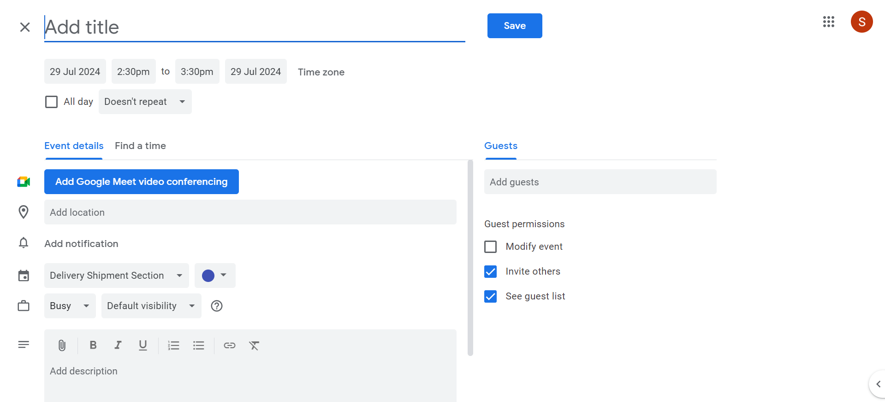First : Add your title / Name(For Leave / Out of Office) and select your time, tick all-day for 24hours
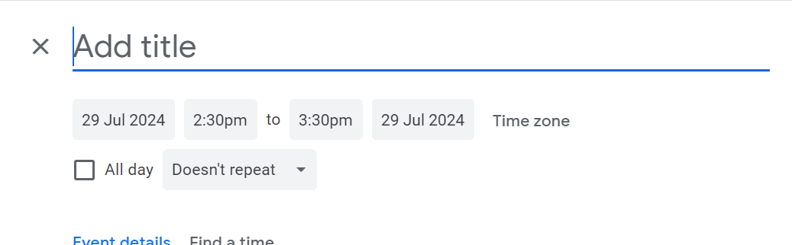Second : Pick the calendar involved according to your Title and add description if needed
 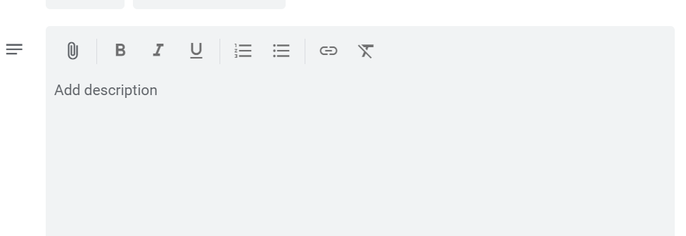
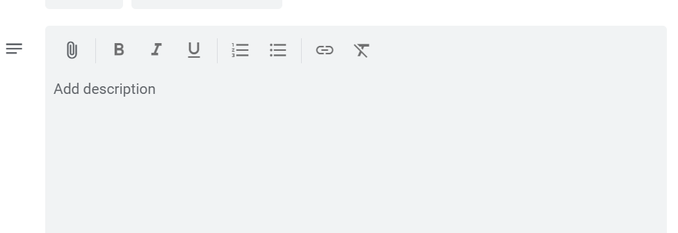
Last : Click the save button and it will automatically save the event for your calendar
"RETURN" button allows you to return back to main calendar
You can simply click the agenda option to review the event/task for the current period
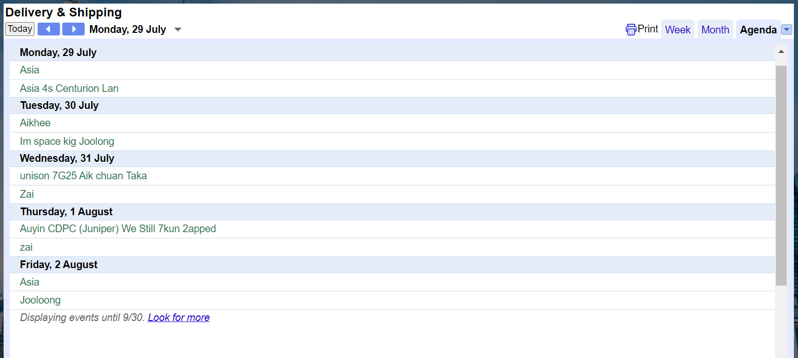You may also see the details (title and description) of your event by clicking on it
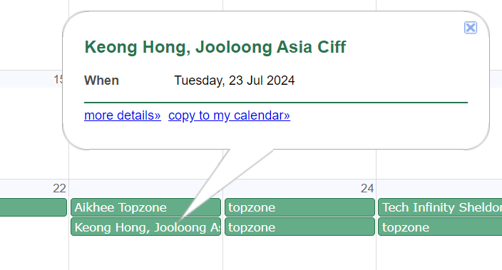To Edit / Delete an event, click on the view button and it will directly bring you the google calendar
Click on the selected event you want to edit / delete
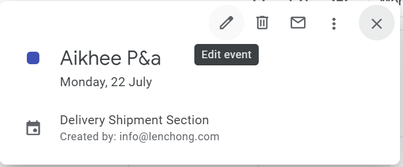To make sure the event are fully deleted, you need to visit the trash/bin option and clear event completely
Here's how
Click on the Delete button
Select from the "Bin for my calendar", then click to remove all the deleted event from your bin
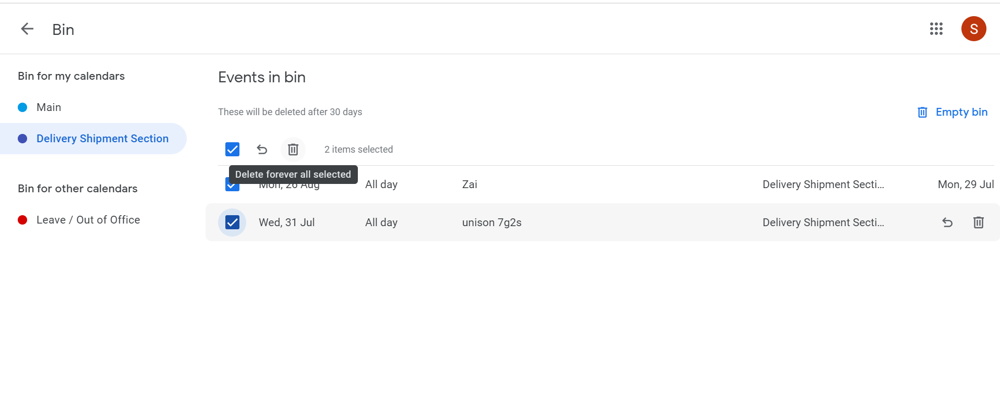Mobile Application for the calendar requires first time sign in
Only one-time-sigin for each devices unless you delete or reinstall the application
4 Parts of Calendar on Mobile Application
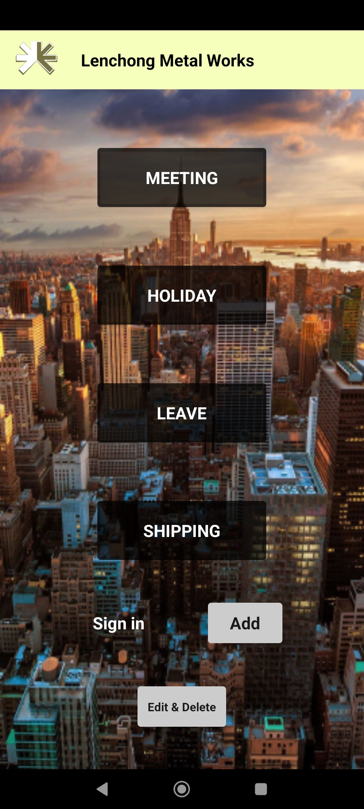Meeting, Holiday, Leave, Shipping
To add an event, click on the "ADD" button it will take you to the page
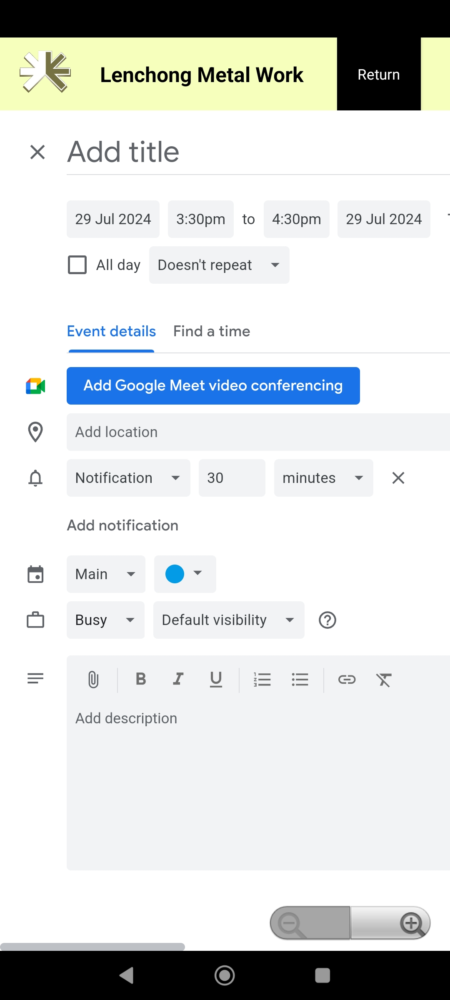You can also turn your screen orientation to landscape for better view
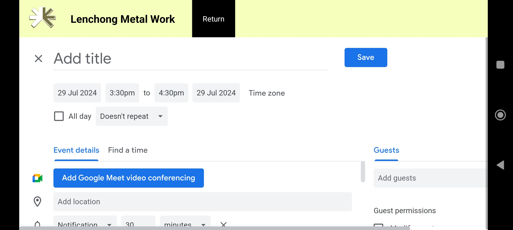For Edit / Delete, click on the "Edit & Delete" button and choose either "Day / Month" on top of the middle

The "Return" button is always direct to the main menu
Select the event from the specific day and click to edit from the top right corner same with delete
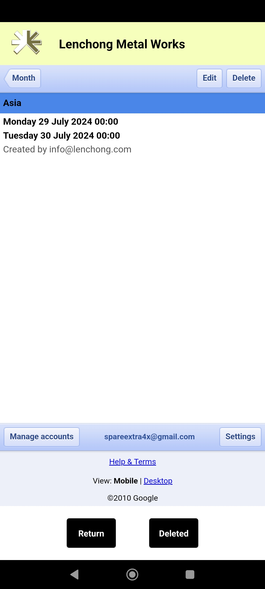 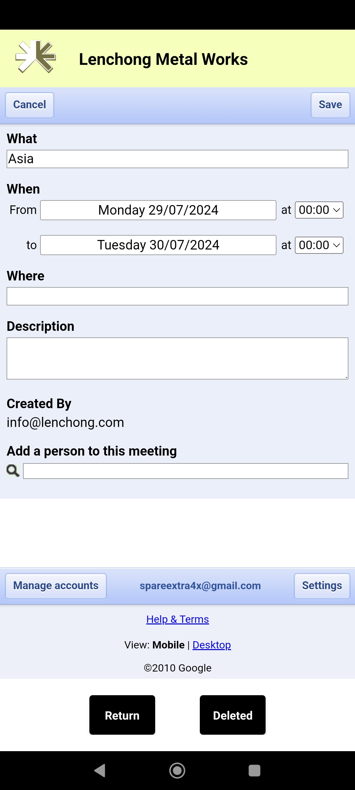Same as delete function

For Deleting Task, Once you have deleted the event, click on the "Deleted" button from the bottom
After clicked on the "Deleted" button, click "Empy the Bin" or manually clear the event if needed
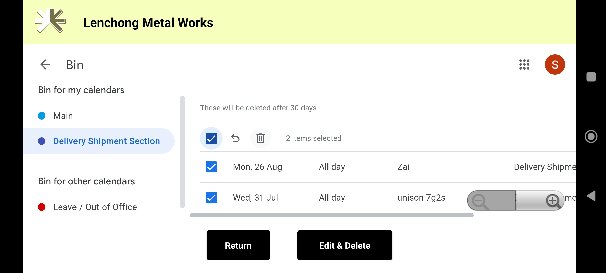